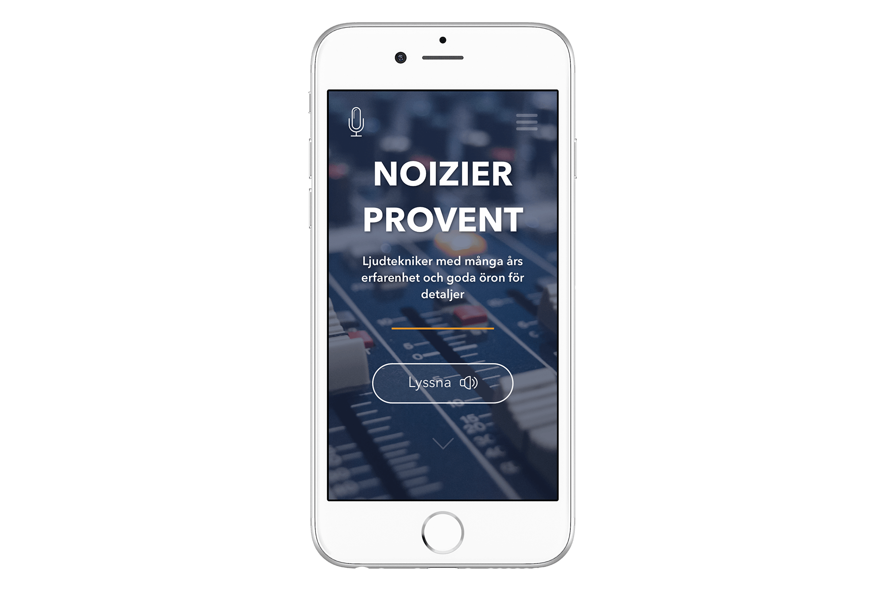
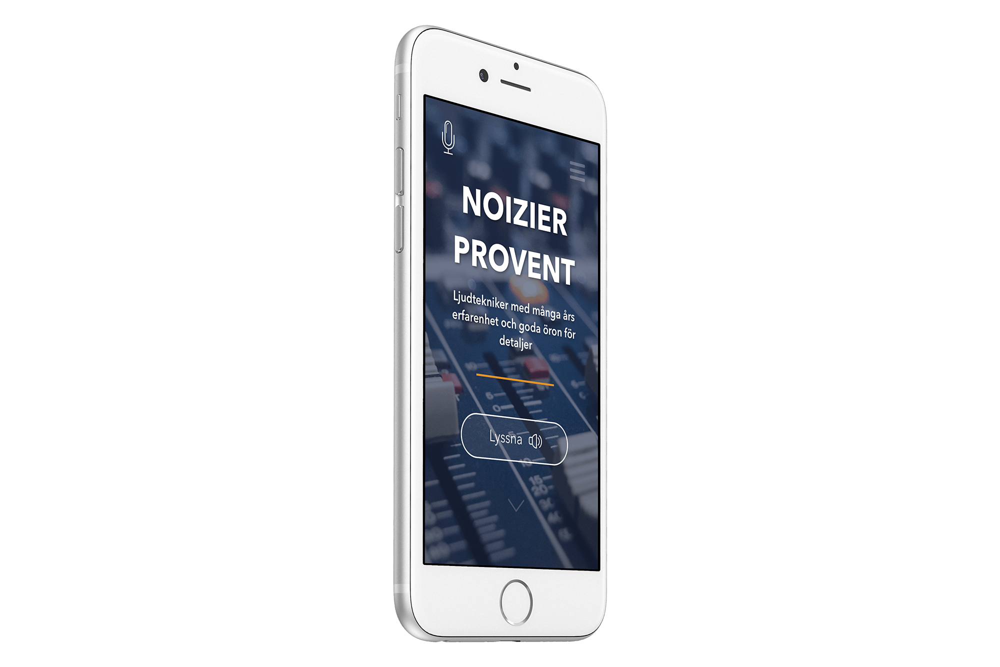
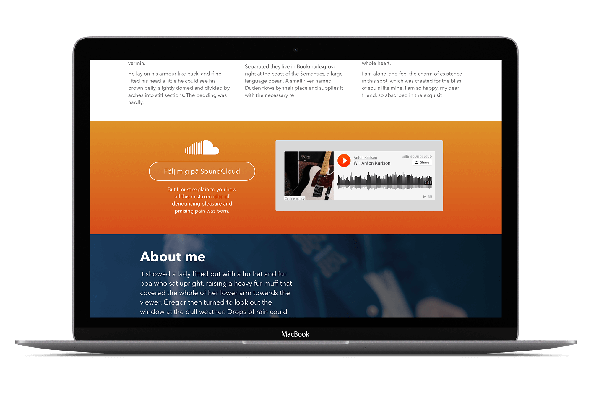

Webbplats
| 23 November 2016
Ett uppdrag åt en klient som ville ha en portfolio för att demonstrera sina yrkeskunskaper. Både som musiker och producent. Sidan skall fungera som en plats för eventuella kunder att ta del av inspelade låtar och för kundkontakt.

Först skapades en design som fungerade bra på smartphones. Efter det kunde designen skalas upp till större enheter som t.ex. iPad och laptops. Viktigt är att användare av sidan skall kunna få samma upplevelse oavsett vilken enhet de använder.
För att kunden skall kunna visa upp sitt material på ett enkelt sätt implementerades stöd för Soundcloud. Med hjälp av funktionen kan besökare av webbplatsen lyssna på inspelat material. Besökare behöver alltså inte lämna sidan för att lyssna på materialet.
